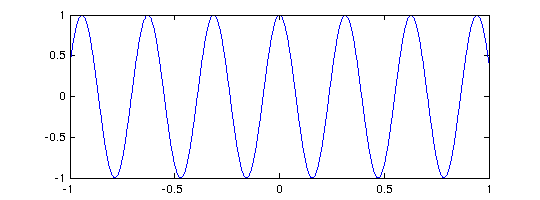
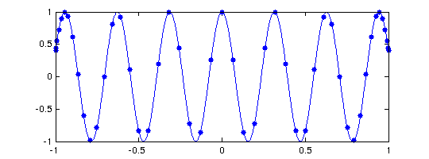
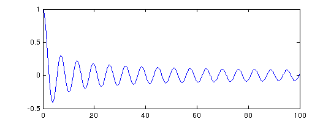
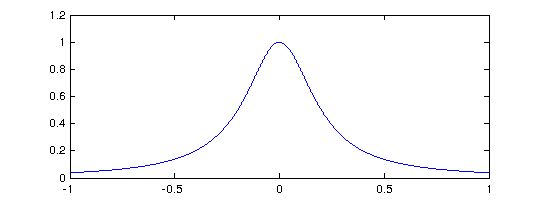
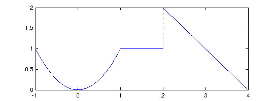
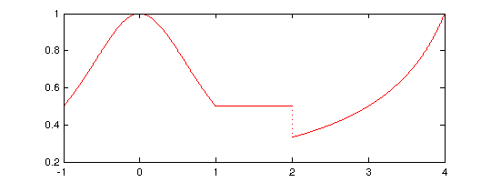
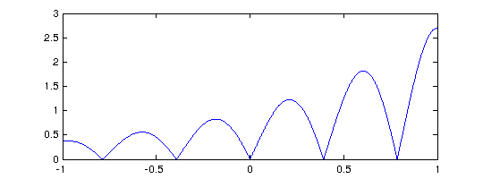
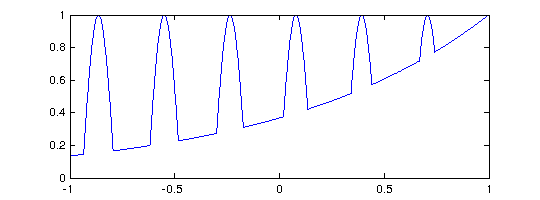
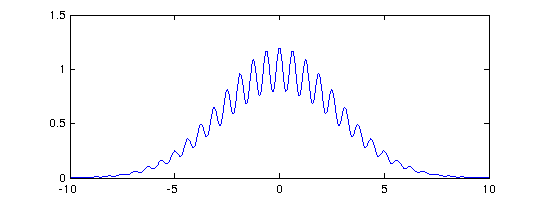
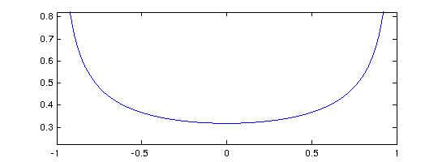

CHEBFUN GUIDE 1: GETTING STARTED WITH CHEBFUN
Lloyd N. Trefethen, October 2009, revised February 2011
Contents
1.1 What is a chebfun?
A chebfun is a function of one variable defined on an interval [a,b]. The syntax for chebfuns is almost exactly the same as the usual Matlab syntax for vectors, with the familiar Matlab commands for vectors overloaded in natural ways. Thus, for example, whereas sum(f) returns the sum of the entries when f is a vector, it returns a definite integral when f is a chebfun.
Chebfun with a capital C is the name of the software system.
The aim of Chebfun is to "feel symbolic but run at the speed of numerics". More precisely our vision is to achieve for functions what floating-point arithmetic achieves for numbers: rapid computation in which each successive operation is carried out exactly apart from a rounding error that is very small in relative terms [Trefethen 2007].
The implementation of Chebfun is based on the mathematical fact that smooth functions can be represented very efficiently by polynomial interpolation in Chebyshev points, or equivalently, thanks to the Fast Fourier Transform, by expansions in Chebyshev polynomials. For a simple function, 20 or 30 points often suffice, but the process is stable and effective even for functions complicated enough to require 1000 or 1,000,000 points. Chebfun makes use of adaptive procedures that aim to find the right number of points automatically so as to represent each function to roughly machine precision (about 15 digits of relative accuracy).
The mathematical foundations of Chebfun are for the most part well established by results scattered throughout the 20th century. A key early figure, for example, was Bernstein in the 1910s. Nevertheless it is hard to find the relevant material collected in one place. A new reference on this subject will be the Chebfun-based book [Trefethen 2013].
Chebfun was originally created by Zachary Battles and Nick Trefethen at Oxford during 2002-2005 [Battles & Trefethen 2004]. Battles left the project in 2005, and soon four new members were added to the team: Ricardo Pachon (from 2006), Rodrigo Platte (from 2007), and Toby Driscoll and Nick Hale (from 2008). Beginning in 2009, Asgeir Birkisson and Mark Richardson also became involved. Additional contributors from Oxford and elsewhere include Phil Assheton, Folkmar Bornemann, Pedro Gonnet, Tom Maerz, Sheehan Olver, Simon Scheuring, Alex Townsend, and Joris Van Deun.
This Guide is based on Chebfun Version 4, released in 2010. Chebfun is available at http://www.maths.ox.ac.uk/chebfun/.
1.2 Constructing simple chebfuns
The "chebfun" command constructs a chebfun from a specification such as a string or an anonymous function. If you don't specify an interval, then the default interval [-1,1] is used. For example, the following command makes a chebfun corresponding to cos(20x) on [-1,1] and plots it.
f = chebfun('cos(20*x)');
plot(f)
 From this little experiment, you cannot see that f is represented by a polynomial. One way to see this is to find the length of f:
length(f)
ans =
49
Another is to remove the semicolon that suppresses output:
f
f =
chebfun column (1 smooth piece)
interval length endpoint values
[ -1, 1] 49 0.41 0.41
vertical scale = 1
These results tell us that f is represented by a polynomial interpolant through 49 Chebyshev points, i.e., a polynomial of degree 48. These numbers have been determined by an adaptive process. We can see the data points by plotting f with the '.-' option:
plot(f,'.-')
 The formula for N+1 Chebyshev points in [-1,1] is
x(j) = -cos(j pi/N) , j = 0:N,
and in the figure we can see that the points are clustered accordingly near 1 and -1. Note that in the middle of the grid, there are about 5 points per wavelength, which is evidently what it takes to represent this cosine to 15 digits of accuracy. For intervals other than [-1,1], appropriate Chebyshev points are obtained by a linear scaling.
The curve between the data points is the polynomial interpolant, which is evaluated by the barycentric formula introduced by Salzer [Berrut & Trefethen 2004, Salzer 1972]. This method of evaluating polynomial interpolants is stable and efficient even if the degree is in the millions [Higham 2004].
What is the integral of f from -1 to 1? Here it is:
sum(f)
ans = 0.091294525072762
This number was computed by integrating the polynomial (Clenshaw-Curtis quadrature -- see Section 2.1), and it is interesting to compare it to the exact answer from calculus:
exact = sin(20)/10
exact = 0.091294525072763
Here is another example, now with the chebfun defined by an anonymous function instead of a string. In this case the interval is specified as [0,100].
g = chebfun(@(t) besselj(0,t),[0,100]); plot(g), ylim([-.5 1])
The function looks complicated, but it is actually a polynomial of surprisingly small degree:
length(g)
ans =
89
Is it accurate? Well, here are three random points in [0,100]:
x = 100*rand(3,1)
x = 62.120287037980091 94.804465162988791 50.082418128385179
Let's compare the chebfun to the true Bessel function at these points:
exact = besselj(0,x); error = g(x) - exact; [g(x) exact error]
ans = 0.007264225965188 0.007264225965187 0.000000000000000 0.079786547125176 0.079786547125176 -0.000000000000000 0.063644017257148 0.063644017257148 0
If you want to know the first 5 zeros of the Bessel function, here they are:
r = roots(g); r = r(1:5)
r = 2.404825557695789 5.520078110286308 8.653727912911025 11.791534439014285 14.930917708487767
Notice that we have just done something nontrivial and potentially useful. How else would you find zeros of the Bessel function so readily? As always with numerical computation, we cannot expect the answers to be exactly correct, but they will usually be very close. In fact, these computed zeros are accurate to close to machine precision:
besselj(0,r)
ans = 1.0e-14 * -0.828312897136542 -0.082399534411417 -0.319596642774992 0.071369727817872 0.430550222461908
Most often we get a chebfun by operating on other chebfuns. For example, here is a sequence that uses plus, times, divide, and power operations on an initial chebfun "x" to produce a famous function of Runge:
x = chebfun('x');
f = 1./(1+25*x.^2);
length(f)
clf, plot(f)
ans = 185
1.3 Operations on chebfuns
There are more than 200 commands that can be applied to a chebfun. For a list of many of them you can type "methods":
methods chebfun
Methods for class chebfun: abs coth isreal rank acos cov jacpoly ratinterp acosd csc jacreset rdivide acosh cscd jump real acot csch ldivide reallog acotd ctranspose le realsqrt acoth cumprod legpoly rem acsc cumsum length remez acscd define log repmat acsch diag log10 residue airy diff log1p restrict all dirac log2 roots and display loglog round angle domain lt sec any ellipj maps secd area end max sech asec eq mean semilogx asecd erf merge semilogy asech erfc mesh set asin erfcinv min sign asind erfcx minandmax simplify asinh erfinv minus sin atan exp mldivide sind atan2 expm1 mod sinh atand feval movie size atanh fill mrdivide sound besselj find mtimes spy bvp4c fix ne sqrt bvp5c fliplr newID std bvpsc flipud newdomain subsasgn cat floor norm subspace ceil fred not subsref cf fzero null sum chebellipseplot ge ode113 surf chebfun get ode15s svd chebpade getdepth ode45 tan chebpoly gmres or tand chebpolyplot gt orth tanh chebtune heaviside pde15s times comet horzcat pinv transpose comet3 hypot plot uminus complex imag plot3 unwrap compress integral plus uplus cond interp1 poly vander conj inv polyfit var conv inv2 power vertcat cos isempty prod volt cosd isequal qr waterfall cosh isfinite quad why cot isinf quantumstates xor cotd isnan range
(Futher commands can be unearthed with methods linop, methods chebop, and methods domain.) To find out what a command does, you can use "help".
help chebfun/chebpoly
CHEBPOLY Chebyshev polynomial coefficients A = CHEBPOLY(F) returns the vector of coefficients such that F_1 = A(1) T_M(x) + ... + A(M) T_1(x) + A(M+1) T_0(x), where T_M(x) denotes the M-th Chebyshev polynomial and F_1 denotes the first fun of chebfun F. A = CHEBPOLY(F,I) returns the coefficients for the I-th fun. A = CHEBPOLY(F,I,N) truncates or pads the vector A so that N coefficients of the fun F_I are returned. However, if I is 0 then the global coefficients of the *chebfun* F are returned (by computing relevent inner products with Chebyshev polynomials). C = CHEBPOLY(F,...,'kind',2) returns the vector of coefficients for the Chebyshev expansion of F in 2nd-kind Chebyshev polynomials F_1 = C(1) U_M(x) + ... + C(M) U_1(x) + C(M+1) U_0(x) There is also a CHEBPOLY command in the chebfun trunk directory, which computes the chebfun corresponding to the Chebyshev polynomial T_n.
Most of the commands in the list exist in ordinary Matlab; some exceptions are "domain", "restrict", "chebpoly", "define", and "remez". We have already seen "length" and "sum" in action. In fact we have already seen "subsref" too, since that is the Matlab command for (among other things) evaluating arguments in parentheses. Here is another example of its use:
f(0.5)
ans = 0.137931034482759
Here for comparison is the true result:
1/(1+25/4)
ans = 0.137931034482759
In this Runge function example, we have also implicitly seen "times", "plus", "power", and "rdivide", all of which have been overloaded from their usual Matlab uses to apply to chebfuns.
In the next part of this tour we shall explore many of these commands systematically. First, however, we should see that chebfuns are not restricted to smooth functions.
1.4 Piecewise smooth chebfuns
Many functions of interest are not smooth but piecewise smooth. In this case a chebfun may consist of a concatenation of smooth pieces, each with its own polynomial representation. Each of the smooth pieces is called a "fun", and funs are implemented as a subclass of chebfuns. This enhancement of Chebfun was developed initially by Ricardo Pachon during 2006-2007, then also by Rodrigo Platte starting in 2007 [Pachon, Platte and Trefethen 2009]. Essentially funs are the "classic chebfuns" for smooth functions on [-1,1] originally implemented by Zachary Battles in Chebfun Version 1.
Later we shall describe the options in greater detail, but for the moment let us see some examples. One way to get a piecewise smooth function is directly from the constructor, taking advantage of its capability of automatic edge detection. For example, in the default "splitting off" mode a function with a jump in its derivative produces a warning message,
f = chebfun('abs(x-.3)');
Warning: Function not resolved, using 65537 pts. Have you tried 'splitting on'?
The same function can be successfully captured with splitting on:
f = chebfun('abs(x-.3)','splitting','on');
The "length" command reveals that f is defined by four data points, namely two for each linear interval:
length(f)
ans =
4
We can see the structure of f in more detail by typing f without a semicolon:
f
f =
chebfun column (2 smooth pieces)
interval length endpoint values
[ -1, 0.3] 2 1.3 0
[ 0.3, 1] 2 0 0.7
Total length = 4 vertical scale = 1.3
This output confirms that f consists of two funs, each defined by two points and two corresponding function values. We can see the structure from another angle with "struct", Matlab's command for seeing the various fields within an object:
struct(f)
Warning: Calling STRUCT on an object prevents the object from hiding its
implementation details and should thus be avoided. Use DISP or DISPLAY to see
the visible public details of an object. See 'help struct' for more information.
ans =
funs: [1x2 fun]
nfuns: 2
ends: [-1 0.300000000000000 1]
scl: 1.309997215582586
imps: [1.300000000000000 0 0.700000000000000]
trans: 0
jacobian: [1x1 anon]
ID: [47 73495852651]
funreturn: 0
This output again shows that f consists of two funs with breakpoints at -1, 1, and a number very close to 0.3. The "imps" field refers to "impulses", which relate to values at breakpoints, including possible information related to delta functions, discussed in Section 2.4. The "trans" field is 0 for a column chebfun and 1 for a row chebfun (Section 1.6 and Chapter 6). The "jacobian" and "ID" fields are used for automatic differentiation (Chapter 10).
Another way to make a piecewise smooth chebfun is to construct it explicitly from various pieces. For example, the following command specifies three functions x^2, 1, and 4-x, together with a vector of endpoints indicating that the first function applies on [-1,1], the second on [1,2], and the third on [2,4]:
f = chebfun('x.^2',1,'4-x',[-1 1 2 4]); plot(f)
We expect f to consist of three pieces of lengths 3, 1, and 2, and this is indeed the case:
f
f =
chebfun column (3 smooth pieces)
interval length endpoint values
[ -1, 1] 3 1 1
[ 1, 2] 1 1 1
[ 2, 4] 2 2 0
Total length = 6 vertical scale = 2
Our eyes see pieces, but to Chebfun, f is just another function. For example, here is its integral.
sum(f)
ans = 3.666666666666667
Here is an algebraic transformation of f, which we plot in another color for variety.
plot(1./(1+f),'r')
 Some Chebfun commands naturally introduce breakpoints in a chebfun. For example, the "abs" command first finds zeros of a function and introduces breakpoints there. Here is a chebfun consisting of 6 funs:
f = abs(exp(x).*sin(8*x)); plot(f)
And here is an example where breakpoints are introduced by the "max" command, leading to a chebfun with 13 pieces:
f = sin(20*x); g = exp(x-1); h = max(f,g); plot(h)
As always, h may look complicated to a human, but to Chebfun it is just a function. Here are its mean, standard deviation, minimum, and maximum:
mean(h)
ans = 0.578242020778011
std(h)
ans = 0.280937455806246
min(h)
ans = 0.135335283236613
max(h)
ans = 1.000000000000001
A final note about piecewise smooth chebfuns is that the automatic edge detection or "splitting" feature, when it is turned on, may subdivide functions even though they do not have clean point singularities, and this may be desirable or undesirable depending on the application. For example, considering sin(x) over [0,1000] with splitting on, we end up with a chebfun with many pieces:
tic, f = chebfun('sin(x)',[0 1000*pi],'splitting','on'); toc struct(f)
Elapsed time is 0.686400 seconds.
Warning: Calling STRUCT on an object prevents the object from hiding its
implementation details and should thus be avoided. Use DISP or DISPLAY to see
the visible public details of an object. See 'help struct' for more information.
ans =
funs: [1x32 fun]
nfuns: 32
ends: [1x33 double]
scl: 17.186120489749236
imps: [1x33 double]
trans: 0
jacobian: [1x1 anon]
ID: [68 73495852651]
funreturn: 0
In this case it is more efficient -- and more interesting mathematically -- to omit the splitting and construct one global chebfun:
tic, f2 = chebfun('sin(x)',[0 1000*pi]); toc
struct(f2)
Elapsed time is 0.023636 seconds.
Warning: Calling STRUCT on an object prevents the object from hiding its
implementation details and should thus be avoided. Use DISP or DISPLAY to see
the visible public details of an object. See 'help struct' for more information.
ans =
funs: [1x1 fun]
nfuns: 1
ends: [0 3.141592653589793e+03]
scl: 0.999999992552489
imps: [0 -3.214166459275634e-13]
trans: 0
jacobian: [1x1 anon]
ID: [69 73495852651]
funreturn: 0
In a chebfun computation, splitting can be turned on and off freely to handle different functions appropriately. The default or "factory" value is splitting off; see Chapter 8.
1.5 Infinite intervals and infinite function values
A major change from Chebfun Version 2 to Version 3 was the generalization of chebfuns to allow certain functions on infinite intervals or which diverge to infinity: the credit for these innovations belongs to Nick Hale, Rodrigo Platte, and Mark Richardson. For example, here is a function on the whole real axis,
f = chebfun('exp(-x.^2/16).*(1+.2*cos(10*x))',[-inf,inf]);
plot(f)
 and here is its integral:
sum(f)
ans = 7.089815403621932
Here's the integral of a function on [1,inf]:
sum(chebfun('1./x.^4',[1 inf]))
ans = 0.333333333326968
Notice that several digits of accuracy have been lost here. Be careful! -- operations involving infinities in Chebfun are not always as accurate and robust as their finite counterparts.
Here is an example of a function that diverges to infinity, which we can capture by including the flag 'blowup 2' (try help blowup for details):
h = chebfun('(1/pi)./sqrt(1-x.^2)','blowup',2); plot(h)
In this case the integral comes out just right:
sum(h)
ans = 1.000000000000000
For more on the treatment of infinities in Chebfun, see Chapter 9.
1.6 Rows, columns, and quasimatrices
Matlab doesn't only deal with column vectors: there are also row vectors and matrices. The same is true of Chebfun. The chebfuns shown so far have all been in column orientation, which is the default, but one can also take the transpose, compute inner products, and so on:
x = chebfun('x')
x =
chebfun column (1 smooth piece)
interval length endpoint values
[ -1, 1] 2 -1 1
vertical scale = 1
x'
ans =
chebfun row (1 smooth piece)
interval length endpoint values
[ -1, 1] 2 -1 1
vertical scale = 1
x'*x
ans = 0.666666666666667
One can also make matrices whose columns are chebfuns or whose rows are chebfuns, like this:
A = [1 x x.^2]
A =
chebfun column 1 (1 smooth piece)
interval length endpoint values
[ -1, 1] 1 1 1
vertical scale = 1
chebfun column 2 (1 smooth piece)
interval length endpoint values
[ -1, 1] 2 -1 1
vertical scale = 1
chebfun column 3 (1 smooth piece)
interval length endpoint values
[ -1, 1] 3 1 1
vertical scale = 1
A'*A
ans = 2.000000000000000 -0.000000000000000 0.666666666666667 -0.000000000000000 0.666666666666667 0.000000000000000 0.666666666666667 0.000000000000000 0.400000000000000
These are called "quasimatrices", and they are discussed in Chapter 6.
1.7 How this Guide is produced
This guide is produced in Matlab using the "publish" command. The formatting is rather simple, not relying on TeX features or other fine points of typesetting. To publish a chapter for yourself, make sure the chebfun guide directory is in your path and then type, for example, "open(publish('guide1'))". Before publishing, we recommend executing "guidedefaults".
1.8 References
[Battles & Trefethen 2004] Z. Battles and L. N. Trefethen, "An extension of Matlab to continuous functions and operators", SIAM Journal on Scientific Computing 25 (2004), 1743-1770.
[Berrut & Trefethen 2005] J.-P. Berrut and L. N. Trefethen, "Barycentric Lagrange interpolation", SIAM Review 46 (2004), 501-517.
[Higham 2004] N. J. Higham, "The numerical stability of barycentric Lagrange interpolation", IMA Journal of Numerical Analysis 24 (2004), 547-556.
[Pachon, Platte & Trefethen 2009] R. Pachon, R. B. Platte and L. N. Trefethen, "Piecewise smooth chebfuns", IMA J. Numer. Anal., 2009.
[Salzer 1972] H. E. Salzer, "Lagrangian interpolation at the Chebyshev points cos(nu pi/n), nu = 0(1)n; some unnoted advantages", Computer Journal 15 (1972), 156-159.
[Trefethen 2007] L. N. Trefethen, "Computing numerically with functions instead of numbers", Mathematics in Computer Science 1 (2007), 9-19.
[Trefethen 201£] L. N. Trefethen, Approximation Theory and Approximation Practice, SIAM, publication expected in 2013.